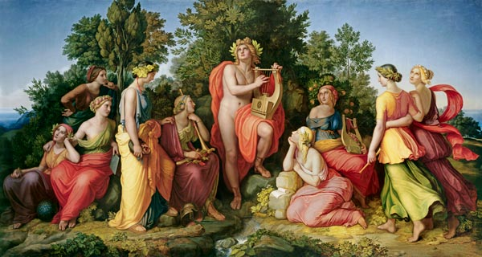

Apollon còn là vị thần của nghệ thuật và âm nhạc, người khơi nguồn cảm hứng cho các nhà thơ. Ngay từ khi Apollon mới ra đời, thần Zeus đã trao cho đứa con của mình một cây đàn lia với ý muốn sau này nó sẽ là một ca sĩ danh tiếng, làm vui cho thế giới các vị thần Olympe. Nhưng có người lại kể, chính cây đàn lia là do thần Hermès sáng tạo ra và đổi cho Apollon. Dù sao thì Apollon vẫn là một vị thần duyên dáng nhất, tài hoa nhất trong số những người con của Zeus được sống ở thế giới Olympe. Apollon thường đàn ca với những tiên nữ Muses85, những người con gái vô cùng đẹp đẽ, duyên dáng với tài hoa của Zeus, khi thì ở đỉnh núi Parnasse xanh rờn, khi thì bên dòng suối Hippocrène thiêng liêng với tiếng nước chảy róc rách và tiếng chim ca hót véo von như muốn hòa cùng với tiếng đàn lia du dương, êm ái của Apollon.

Apôlông và các nàng Muydơ
Những nàng Muses là con gái của thần Zeus và nữ thần Mnémosyne tức nữ thần Trí nhớ hoặc Ký ức. Chuyện xưa kể lại thần Zeus đã đắm say ân ái với nữ thần Mnémosyne suốt chín đêm liền. Sau đó nữ thần sinh ra chín quả trứng rồi mới nở ra thành chín người con gái mà thần Zeus gọi bằng một tên chung là Muses, ngày nay chúng ta thường gọi là Thi thần hoặc nữ thần Thơ ca. Những nàng Muses được Zeus trao cho nhiệm vụ cùng với Apollon chăm lo đời sống tinh thần của thế giới Olympe và thế giới loài người. Vì thế, dưới sự chỉ huy và điều khiển của Apollon, các nàng Muses thường ca múa trong những bữa tiệc của các vị thần. Khi ấy Apollon với khuôn mặt xinh đẹp, tươi như hoa nở tay cầm đàn lia hoặc đàn cithare dẫn đầu đội đồng ca bước ra. Các nàng Muses theo sau trong y phục lộng lẫy đầu đội vòng hoa nguyệt quế, vừa đi vừa múa theo điệu nhạc. Sau đó các nàng quây lại thành vòng tròn và ca múa hết điệu này sang điệu khác, khi thì uyển chuyển nhẹ nhàng, khi thì rộn rã, dồn dập. Thật là muôn hình muôn vẻ. Những lúc ấy không khí của cung điện Olympe trầm lắng, êm ả hẳn đi. Thần Zeus dường như trẻ thơ lại, mắt lim dim, nom hiền từ và đáng yêu chứ không có vẻ gì là một đấng phụ vương oai nghiêm và hách dịch, luôn dồn mây mù, giáng sấm sét. Còn thần Chiến tranh-Arès, đứa con hung hăng ngỗ ngược nhất của Zeus, thì quên bẵng đi tiếng binh khí loảng xoảng, bạo tàn, những cuộc giao tranh đẫm máu. Tiếng đàn ca dường như làm mềm trái tim đồng cứng rắn của vị thần Chiến tranh. Còn các vị thần khác cũng đều bị Apollon và các nàng Muses chinh phục. Họ quên đi những cuộc tranh cãi ồn ào, gay gắt vừa mới đây về biết bao công việc phiền toái của thế giới thần linh và thế giới loài người. Cả đến con đại bàng mỏ quắm hung dữ của Zeus, đã từng mổ bụng, ăn gan Prométhée, lúc này cũng hạ đôi cánh rộng và dài xuống, rụt cổ vào nhắm nghiền mắt lại như muốn thưởng thức những âm thanh huyền diệu. Còn con công của nữ thần Héra thì xòe đuôi múa, những con mắt đen của người khổng lồ Argus do nữ thần đính vào, lúc này long lanh, hớn hở như muốn bày tỏ niềm vui với nữ thần. Chẳng phải chỉ có con vật đó mới bị tiếng nhạc lôi cuốn vào điệu múa. Khi thần Apollon tài hoa chuyển sang một điệu nhạc tưng bừng, rộn rã hơn thì các vị thần đều lần lượt bị lôi cuốn vào vũ khúc. Nữ thần Artémis, em gái của Apollon, vui vẻ dẫn đầu, đưa tay ra mời các chư vị thần linh. Nữ thần Aphrodite bước vào cuộc vui với sắc đẹp rực rỡ, chói lọi lôi cuốn mọi người. Thần Hermès, Hadès, thần Poséidon, các thần khác và đấng phụ vương Zeus trên ngai vàng cười hể hả trước cảnh tượng vui tươi đầm ấm của thế giới thiên đình.
Thần Apollon gắn bó với các nàng Muses trong nghệ thuật ca múa như thế cho nên người ta còn gọi thần bằng một tên khác: Apollon Musagète, nghĩa là Apollon người chỉ huy các nàng Muses.
Các nàng Muses lúc đầu được Zeus giao nhiệm vụ như thế, nghĩa là chỉ có mỗi công việc ca múa. Nhưng sau dần công việc trên thiên đình và dưới trần thế ngày càng nhiều hơn và phức tạp hơn, cho nên thần Zeus phải phân công cho mỗi nàng Muses cai quản một lĩnh vực khoa học và nghệ thuật của loài người. Nàng Calliope: sử thi; nàng Euterpe: thơ trữ tình; nàng Érato: thơ tình dục; nàng Terpsichore: nghệ thuật ca múa; nàng Polhymnie: lúc đầu cai quản thơ tán mỹ (hymne) sau cai quản kịch câm (pantomime); nàng Melpomène: bi kịch; nàng Thalie: hài kịch; nàng Clio: sử học; nàng Uranie: thiên văn học. Vì lẽ đó cho nên những nhà thơ cổ đại coi nghệ thuật của mình là do các nàng Muses ban cho và trước khi biểu diễn trước công chúng thường có lời cầu khấn nữ thần Muses hoặc cảm tạ nữ thần Muses. Cũng vì lẽ đấng phụ vương Zeus chí sáng suốt, chí hiền minh tuy đã “phân công, phân nhiệm” rành rõ cho chín người con gái của mình nhưng cũng không ngờ đâu được rằng loài người chúng ta lại “đẻ” ra cái nghệ thuật điện ảnh, cho nên để tỏ lòng “tôn kính” đối với thần Zeus, chúng ta gọi nghệ thuật này là Nghệ thuật của nàng Muses thứ mười, do nàng Muses thứ mười86 cai quản, mặc dầu thần Zeus đã thôi đẻ từ lâu rồi.
Trong văn học các nước châu Âu, Muses trở thành danh từ chung chỉ “thi hứng”, “cảm hứng nghệ thuật”, “tài năng thơ ca, nghệ thuật”87. Những người La Mã du nhập các Muses vào hệ thống thần thoại của mình và đổi tên là Camènes. Cũng có trường hợp người ta gọi các Muses là những tiên nữ Hélicon, những nữ hoàng của ngọn núi Hélicon, một ngọn núi ở miền Trung Hy Lạp nơi các Muses thường trú ngụ.
Về các nàng Muses, chúng ta có thể phân định ra có hai lớp huyền thoại phức hợp với nhau. Việc Zeus đẻ một lúc tới chín người con gái hẳn rằng thuộc về lớp huyền thoại thời kỳ thị tộc mẫu quyền. Nhưng việc những nàng Muses được Zeus phân công cho cai quản các lĩnh vực văn hóa-nghệ thuật như anh hùng ca, bi kịch, sử học, văn hùng biện... chắc chắn không thể nào thuộc về thời kỳ thị tộc mẫu quyền. Rõ ràng những thành tựu văn hóa, khoa học, nghệ thuật chỉ có thể là sản phẩm của chế độ chiếm hữu nô lệ cổ đại và lớp huyền thoại này thuộc về thời kỳ chế độ chiếm hữu nô lệ được lắp ghép vào sau này, nếu dùng thuật ngữ như nhà bác học Xôviết A.F. Losev đã chỉ ra, thì đây là một hình thức phức hợp thêm thắt.
[85] Trong sách báo của chúng ta có người dịch là nàng Ly-tao, chúng tôi thấy dịch như thế không đúng.
[86] Có khi người ta gọi nghệ thuật điện ảnh là nghệ thuật của nàng Muses thứ bảy theo sự sắp xếp: thơ, ca, vũ, nhạc, bi kịch, hài kịch, điện ảnh.
[87] Un nourrisson des Muses: người con của những nàng Muse, chỉ nhà thơ. La muse de Victor Hugo: thiên tài thơ ca của Hugo.